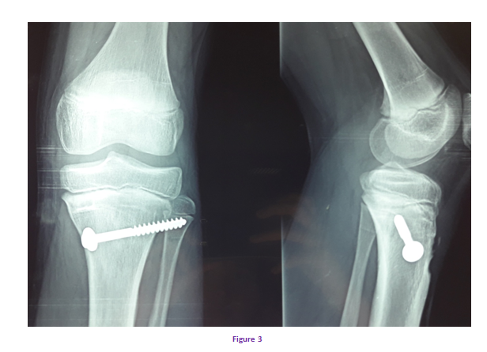
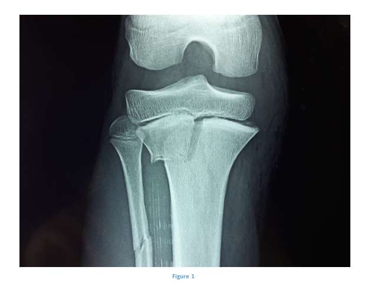
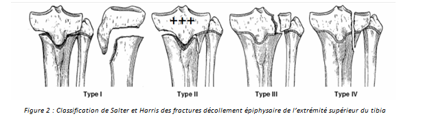

Cas clinique 12
Genou
Patient de 14 ans, sans antécédents particuliers, avait été victime d’un traumatisme au niveau du genou droit lors d’un accident de la voie publique.
Le patient avait présenté une impotence fonctionnelle totale du membre inférieur droit avec une douleur à la palpation de l’extrémité supérieure du tibia.
Réponse :
C’est une fracture décollement épiphysaire type II de Salter et Harris de l’extrémité supérieure du tibia droit.
Réponse :
Il faudra rechercher systématiquement :
- Une lésion de l’artère poplitée ou l’une de ses branches.
- Une lésion du nerf tibial ou nerf fibulaire commun.
- Une ouverture cutanée.
- Une lésion ligamentaire associée.
Sous anesthésie générale, réduction à ciel fermé et vissage percutané suivi d’une immobilisation par plâtre cruro-pédieux.

Réponse :
- -Epiphysiodèse.
- -cal vicieux.
- -Raideur articulaire.
- -Gonarthrose.
Commentaire :
Les fractures décollement épiphysaire de l’extrémité supérieure du tibia sont des fractures rares et surviennent essentiellement chez les adolescents entre 13 et 16 ans.
Les caractéristiques anatomiques de l’extrémité supérieure de la jambe expliquent la rareté de ces lésions et les complications vasculo-nerveuses qu’elles peuvent entrainer.
Commentaire :
- -Atteinte de l’artère poplitée ou l’une de ses branches est évaluée à 10% : il faudra rechercher les pouls avant et après toute manœuvre de réduction.
- -Lésion ligamentaire associée dans 50% des cas : touchant le ligament collatéral médial ou le ligament croisé antérieur.
- -Lésions neurologiques : les lésions du nerf tibial et du nerf fibulaire commun sont rares mais devront être recherchées systématiquement.
- -Ouverture cutanée.
Commentaire :
En présence de signes d’ischémie distale, la réduction sous anesthésie générale voire l’exploration sont une urgence absolue.
De même les fractures très déplacées devront être réduites rapidement même en l’absence de complications vasculo-nerveuses initiales.
Les fractures type I et II de Salter et Harris :
- Traitement orthopédique par immobilisation cruro-pédieuse après réduction sous anesthésie générale.
- En l’absence de réduction satisfaisante un abord chirurgical sera nécessaire : ostéosynthèse en croix ou vissage puis immobilisation cruro-pédieuse.
Les fractures type III ou IV de Salter et Harris :
- -Réduction anatomique généralement par arthrotomie.
- -Ostéosynthèse par vissage ou embrochage.
- -Lorsque la croissance résiduelle est non négligeable, l’ostéosynthèse respectera tant que possible le cartilage de croissance.
Il faudra évacuer les hémarthroses afin de soulager le patient.
Commentaire :
- Epiphysiodèse: une lésion du cartilage de croissance occasionnera des troubles de la croissance à type de déviations axiales (tibia vara, valga, recurvatum) voire une inégalité de longueur des membres.
- -Raideur articulaire: cette séquelle relativement fréquente en cas de fracture articulaire sera prévenue par une réduction anatomique et une rééducation appropriée après l’immobilisation.
- -Gonarthrose: Les fractures type III et IV ont un potentiel arthrogène.
Figure 1

Pour approfondir :
Classification de Salter et Harris :
- Type I : correspond à un décollement épiphysaire pur passant uniquement par le cartilage de croissance.
- Type II : correspond à un décollement épiphysaire avec un fragment métaphysaire.
- Type III : correspond à un décollement épiphysaire avec un fragment épiphysaire.
- Type IV : le trait de fracture sépare un fragment métaphyso-épiphysaire.
La fracture de type II est la plus fréquente des fractures décollement épiphysaire.

Mécanisme:
La fracture peut être la conséquence d’un traumatisme direct ou indirect :
- -Une mise en abduction ou hyperextension d’un genou fixé au cours d’un accident de sport, de deux roues ou lors d’une chute.
- -Plus rarement, un déplacement en flexion à la suite d’un saut avec une réception manquée.
DIAGNOSTIC :
- Clinique :
- -Impotence fonctionnelle douloureuse.
- -Tuméfaction du tibia proximal.
- -Déformation variable suivant le déplacement.
- -Toujours rechercher des complications vasculo-nerveuses.
- Radiographique :
- -Diagnostic le plus souvent affirmé sur des clichés du genou de face et de profil.
- -En l’absence de déplacement le diagnostic peut être difficile ; il faudra compléter le bilan standard par des clichés ¾.
Pour approfondir :
L’épiphysiodèse :
Lorsque le pont est central, la conséquence est l’arrêt de la croissance, le raccourcissement est la conséquence d'un traumatisme survenu soit en cours de croissance soit un traumatisme violent avec un déplacement important. Le raccourcissement constitue la complication la plus redoutable. Il est le témoin d'une épiphysiodèse plus ou moins complète du cartilage de croissance. Cette épiphysiodèse peut être définitive et est d’autant plus grave que le décollement survient à un âge plus bas.
Lorsque le pont est latéral la conséquence est une déviation axiale. Elle est la conséquence d’une épiphysiodèse incomplète.
Au cours des lésions épiphysaires, l'épiphysiodèse s’observe surtout dans les fractures de type IV et V de Salter et Harris mais peuvent aussi se rencontrer, bien que plus rarement, dans les lésions de type III.
Références
- Ciszewski WA, Buschmann WR, Rudolph CN.
Irreducible fracture of the proximal tibial physis in an adolescent,
Orthop Rev 18:891–893, 1989
- Gill JG, Chakrabarti HP, Becker SJ.
Fractures of the proximal tibial epiphysis,
Injury 14:324–331, 1984.
- Aitken AP
Fractures of the proximal tibial epiphyseal cartilage,
Clin Orthop Relat Res 41:92–97, 1965
- Bérard J, Chotel F, Parot R, Durand JM.
Fractures autours du genou chez l’enfant.
In: Fontaine C, Vannineuse A, editors. Fractures du Genou. Paris, Berlin, Heidelberg, New York: Springer; 2005.p. 297-316.
- Lechevallier J.
Les traumatismes du genou chez l’enfant.
In: Ortho-Pédiatrie 4 Traumatologie membre supérieur, membre inférieur, divers. Une sélection des conférences, d’en seignement de la SOFCOT(1993)
- Benz, H. Roth, z. Zachariou.
Fractures and Cartilaginous Injuries of the Knee Joint in Childhood Kinderchirurg.
Abteilung des Chirurgischen Zentrums der Universität Heidelberg (Direktor: Prof. Dr. R. Daum) Eingegangen am 3. Dezember 1985
- Kraus· M. Kvehlík· G. Singer·J. Schalamon· E. Zwick · W. Linhart.
The epidemiology of knee injuries in children and adolescents;
Arch Orthop Trauma Surg (2012) 132:773–779.
- LEWIS E. ZIONTS • MAURICIO SILVA • SETH GAMRADT
Fractures around the Knee in Children Green's Skeletal Trauma in Children, pp.390-436 December 2015